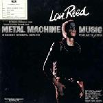
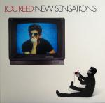

Lou Reed: A Life In Music (Part Two)
For the first part of our tribute to the life and music of Lou Reed, please click here. The third and final part is now available here.
. . .
Part Two: 1975 to 1989, Metal Machine Music to New York
Metal Machine Music (1975)
It seems sort of counter-intuitive to try and describe an album like Metal Machine Music by way of a track-by-track appraisal, so I’ll simply attempt to do so via anecdote instead. The first time I heard Lou Reed’s anti-music, anti-label, anti-human ode was on a burned CD on an incredibly hot summer day. I had spent the bulk of that day driving around town aimlessly in a sort of feverish state, Reed’s endless loop of feedback and vitriol acting as a sort of musical carpeting to the world of highway outside my windshield. After 4 straight listens, I was dead-set on the idea that Reed was some kind of kindred spirit to fellow 20th century audio-manipulators Stockhausen, Xenakis, and Cage – a thought which now seems absurd to me as these were the same stiffs that Reed would have snarled at in between cocaine psychoses. Anyway, to make a long story short, by day’s end the CD had melted onto my dashboard in the heat – a fitting end to what’s essentially an effusive electronic hissy-fit. (Andrew Ciraulo)
You’ll need a pair of headphones and a relatively strong stomach, but you can’t say you weren’t warned: Yes, this album is four sides of droning guitar feedback, and yes I think it’s brilliant. When Reed told Lester Bangs he’d buried melodic themes from Mozart, Beethoven, and Vivaldi in the mix, he was of course taking the piss, but if you’re in the mood, Metal Machine Music sounds gorgeous – full of huge swathes of colour and noise, exploding in all directions at once. I’d initially assumed from the way people talk about it that the guitars would be completely detuned, that there would be no variation – but a fizzing major chord reverberates throughout the record, while the textures semi-aleatorically shapeshift. I’m pushing it, but I dare say there’s something very tranquil about it. Inevitably, it’s remembered as a “fuck you” by people who have never listened to the album and assume anyone could have made it, but its influence is deservedly enormous. (Stephen Wragg)
Coney Island Baby (1975)
It’s difficult to imagine quite what people were expecting after the shock and awe/bore (delete as appropriate) of Metal Machine Music, but five months later Lou served up Coney Island Baby, his most accessible and I would say finest album since the Velvet Underground’s 1970 swan song, Loaded. A polished collection comprising eight wonderful tracks, the album showcases a more tender brand of songwriting from Reed and also benefits from the stellar performances of his highly proficient backing band. It’s particularly notable for a stunning reworked version of She’s My Best Friend, my favourite non-album Velvets track, and the heart-breaking title track, which really deserves a wider audience. If you’re looking for a route into one of Lou Reed’s better kept secrets, make Coney Island Baby your starting point. (David Coleman)
Rock and Roll Heart (1976)
1976’s Rock and Roll Heart was critical received as falling short of expectation. The Chicago Tribune called the album, “bleak and bland.” While the album may have not been warmly received at first, Rock and Roll Heart came at an important period in Reed’s life. Following the commercial failure of Metal Machine Music, and with Rock and Roll Heart being his first album for start-up Arista Records, it could be argued that Reed wanted to produce something sellable for his new label. Rock and Roll Heart captures an upbeat and pop-hook laden side of Reed. In I Believe in Love, he sings about the so-called good times in rock n roll, a departure from his gloomier past. Banging on My Drum echoes back to his work with The Velvet Underground, a catchy and fast pace rock n roll jam. The album closes with Temporary Thing, a song that followed in Reed’s true form, a gritty tale of street life. The track foreshadowed Reed’s defining follow-up Street Hassle. (Carlos Villareal)
Street Hassle (1978)
There wouldn’t have been a New York punk scene without Reed. It can also be argued that the scene reenergized his career. Case in point is Street Hassle, a mix of live and studio tracks that embraces the raw and messy spirit of the age. On Gimme Some Good Times a double-tracked Reed references his Rock-‘N’-Roll-Animal phase, all the while sounding like a drunken sailor as he equates pain with pleasure. He is at his belligerent best on the untidy Dirt, cranking up guitars over a mastodon beat. His rare verbal genius is in evidence on I Wanna Be Black, where he lays down some sharp ironic verses over a jump-blues beat worthy of Big Joe Turner. Wait resembles sixties tunes sung by Bobby Vee. The undisputed gem is the title song, a work of grace and dazzle in three movements about a hustler who’s trying to get rid of a client’s body. Sawing cellos, a great vocal performance, and a Bruce Springsteen cameo make this a stunning piece. (Angel Aguilar)
The Bells (1979)
The Bells is a friggin’ weird record. I don't know any other way to describe it. What’s with the accent in Stupid Man? And how does Lou pull off a song called Disco Mystic without it being a total farce? I can only imagine that this was his response to the overwhelming demands of the late 70s marketplace. Everything is over-produced and over-arranged and Lou sounds like he’s mocking the whole enterprise. Yet despite all of this it remains oddly compelling, as singer and musicians alike are 100% committed to every second of the album. There’s an energy and passion in the grooves that never wavers, and Reed's songwriting pen is sharp. It’s too bizarre to be his best record, but there really is nothing else like it. (Alan Shulman)
Growing Up in Public (1980)
Growing Up In Public featured an emotionally open approach to Reed’s lyrics. The album plays as a honest and frank narrative set to backing music. The album is full of tracks that directly confront issues that Reed experienced throughout his life. My Old Man captures the love/hate relationship that many men have with their fathers. According to a biography by Victor Bokris, Reed was subjected to electro-shock therapy as a teenager by his father, in hopes to cure him of homosexual feelings. After quitting the Velvet Underground in 1970, Reed actually went to work for his father at his tax accounting firm as a typist. He would leave a year later to record his first solo album. Standing on Ceremony continues on Reed’s exploration of his feelings towards his father. The track plays as a piano driven ballad, ending with Reed shouting “standing on ceremony,” alluding to Reed’s upbringing. Think It Over, a song written about Reed’s second wife Sylvia Morales, captures the rough beauty of this album. (Carlos Villareal)
The Blue Mask (1982)
In retrospect, the 1980s wasn’t exactly Lou Reed’s finest period, but to entirely write off his output during the decade would mean missing out on this mid-career highlight. On the eve of his fortieth birthday, Reed, seemingly embracing that old “life begins...” cliché, lined up a new band featuring guitar virtuoso Robert Quine, bassist Fernando Saunders, and drummer Doane Perry – some would argue the finest line-up of his solo career – to deliver one of his very best post-Velvets records. It’s a record that sounds extremely focused and stripped-back, the aural equivalent of Reed rolling up his sleeves and setting to work on a brave new era of critical and perhaps, finally, commercial success. Sadly, this didn’t quite materialise; his talented band disintegrated and a run of patchy albums followed. Still, it was truly great while it lasted. (David Coleman)
Legendary Hearts (1983)
Reinvigorated by his new band and his artistic success with The Blue Mask, Lou settles in for a more light-hearted outing for the follow up. Robert Quine’s frenetic guitar is mostly kept under wraps and the amazing Fernando Saunders steps forward to take the front spot, sometimes at the expense of Lou’s vocals. It’s hard to complain because Fernando is an extraordinary bass player and Lou wasn't much of a singer. The songs are good though, the production is dated with 80s tropes, and a suitable balance among the instruments is never achieved. On Mask, the same band sounds alive, present and forceful. Here it sounds weak, tepid and restrained. This is partly due to the material, which is less immediate, but Lou takes the blame as producer for compromising the power he achieved on the previous record. Still, Bottoming Out ranks with the great Reed songs as cathartic confessional. (Alan Shulman)
New Sensations (1984)
New Sensations provided Lou with his first major radio play in several years with the minor hit, I Love You, Suzanne, a light ditty sounding tossed off Instant Karma-style. It kicks off another (relatively) upbeat outing, that even has Reed making corny sex jokes like My Red Joystick. Robert Quine, effectively absent from Legendary Hearts, is dropped from the band and isn’t really missed. Lou again relies heavily on Fernando Saunders’ bass and Fred Maher’s drums, and they deliver where his simple, direct songs need it. There aren’t any full-on classics here, but the whole set is enjoyable, and this capped a decent trifecta for Reed who probably hadn’t a run of three solid albums in a row since the late 60s. (Alan Shulman)
Mistrial (1986)
The narrative of Reed as a maverick is so informed by the variations in his career, swinging from the sublime to the unlistenable, that it's easy to overlook his more middling work. And 1986's Mistrial is perhaps the middlingest of the middling; 38 minutes of synth-aided but straightforward rock 'n' roll that sounds suspiciously like Huey Lewis and the News or Dire Straits (No Money Down’s similarities to Money For Nothing are almost cynical). In truth there's not much to leave much of an impression, good or ill; the lyrics are occasionally hokey, but not his worst, while Video Violence might seem hypocritically judgmental, but Jim 'People Who Died' Carroll’s appearance on backing vocals suggests a touch of the tongue in cheek. Perhaps it says a lot about Reed's outsider status in his prime that the decade’s fads were far more forgiving on him than, say, Bowie. The Original Wrapper's slap bass-heavy rap sounds like a recipe for disaster, yet his signature semi-mumble proves itself to be surprisingly versatile.
Cheerful, professional, even pleasant, it’s an album that seeks to follow fashion rather than define it, which is probably the worst charge that could ever be raised against a Lou Reed record. (Mark Davison)
New York (1989)
As Dylan was losing his born-again zeal, Reed was renewing his crusade on behalf of misanthropy. All through this album he suffers no fools, letting loose his untamed wit on conservatives, racists, and bleeding-heart liberals. It opens with Romeo Had Juliet, a feat of words and music that is equaled on tracks like There Is No Time, Dirty Blvd., and Last Great American Whale. The arrangements are basic, mostly just guitar, drums, and bass – but Reed and the band are a versatile bunch. There are tasty country and jazz licks on songs like Beginning Of A Great Adventure and Sick Of You. Reed sings cool and collected until Strawman, where he reveals genuine anger and outrage. He ties those feelings with a neat knot on Dime Store Mystery, which ponders on the duality of the human soul. That duality is what his music was all about. Now the inkwell is dry and the poet rests, but his works live on. (Angel Aguilar)
. . .
The third and final part of our Lou Reed tribute follows his career from Songs for Drella to 2011's Lulu. Read it here.
6 November, 2013 - 08:21 — No Ripcord Staff